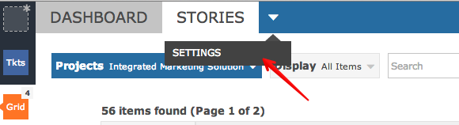
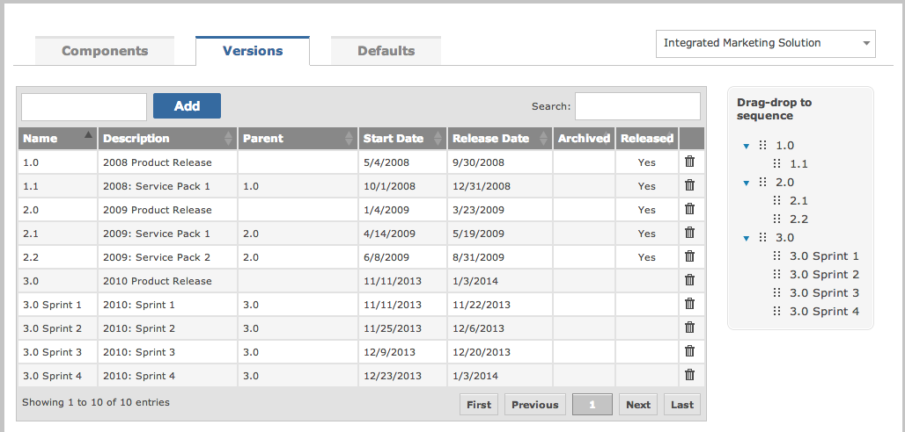
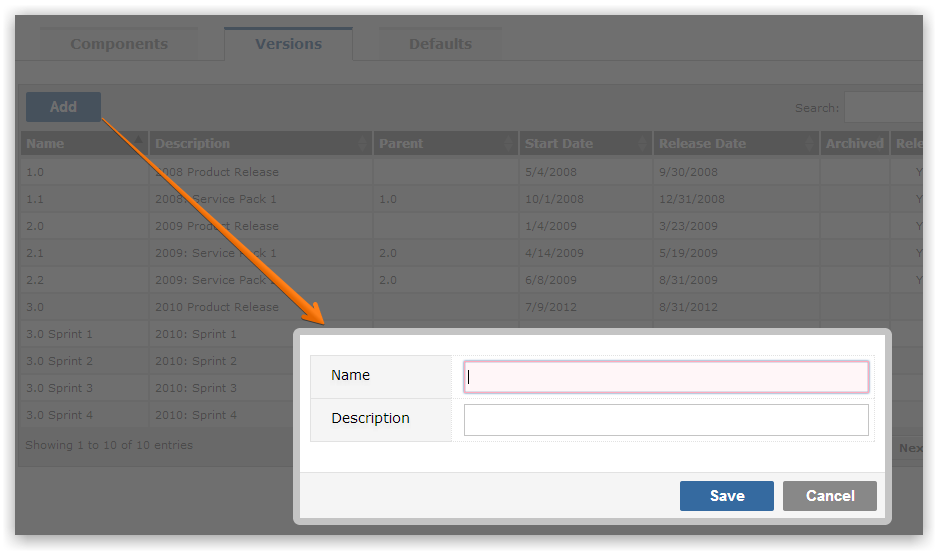
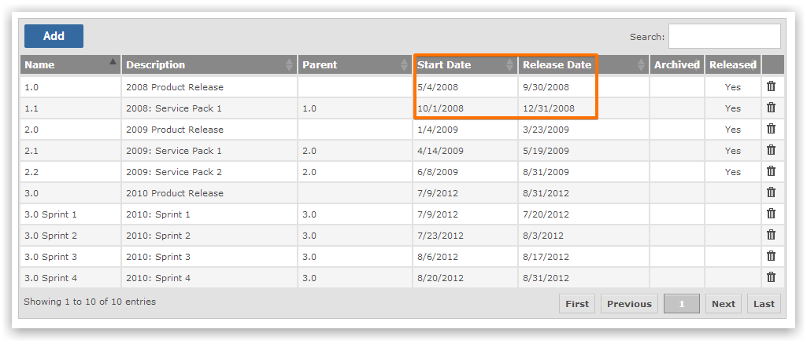

Versions are manageable phases that encapsulate work to be done. Once the sprint is complete a working product is expected to be delivered. The objective is to define sprints that contain the work to be completed. A sprint that contains work to be completed is known as a Version Backlog.
Items in the Version Backlog are scheduled - resource and delivery dates have been allocated.
Every project enables the creation of Versions (sometimes known as Versions).

Versions can be organized into a hierarchical structure (nested):

Add sprints as required.

Every sprint should be allocated a start and completion date.

These dates help you plot Burn-down Charts.
NoteThe project Settings menu can only be accessed by user groups who have the "Can Manage Versions" permission.